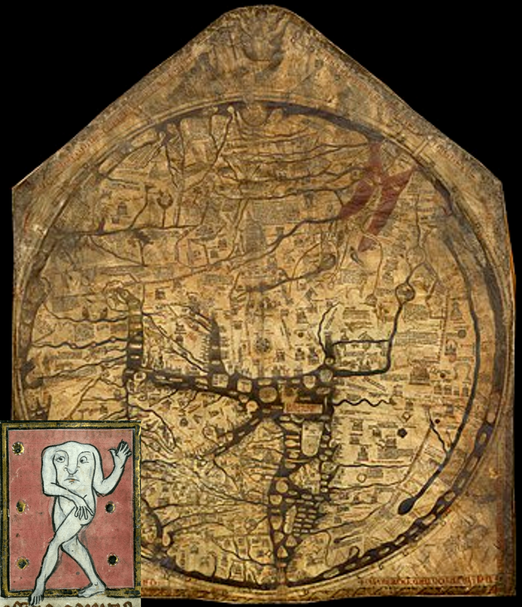
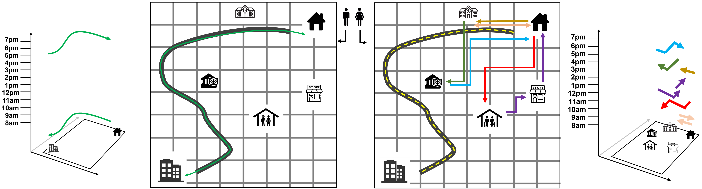
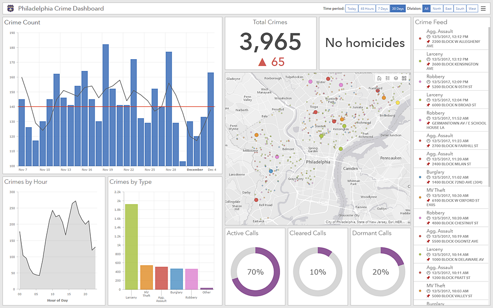

Overview of Today's Class
For most of history, only the most elite were able to access and create maps. "Others" become warped.
Hereford Mappamundi & one of the "monsters" on the "periphery" of the world.
Digital tools have helped bridge the gap, however access to geographic information is still not equal
Over 1 billion people are estimated to live in unmapped areas
https://cope.ku.dk/news/2021/off-the-grid/
There are targeted efforts to engage more people in mapping:
https://crowd2map.org/
Google Maps versus Open Street Maps for the neighborhood Makoko, Lagos, Nigeria
Both of these examples used Open Street Maps
There are still disparities with OSM.
For example, an estimated 87%-96% of OSM contributors are men
Different people have different experiences in the same space.
Extra Credit:
Crowdsource your own data with AGOL:
AGOL has a few options for this:
We will build a Survey 123 survey and embed it in a Dashboard
Note, you are able to embed the survey into other applications as well
AGOL Dashboards: designed to display multiple visualizations that work together on a single screens
Demo, in three parts:
1: Create Survey 123 Survey
2: Create Webmap
3: Create Dashboard & Add Survey 123 Survey to it
Assignment
Questions?